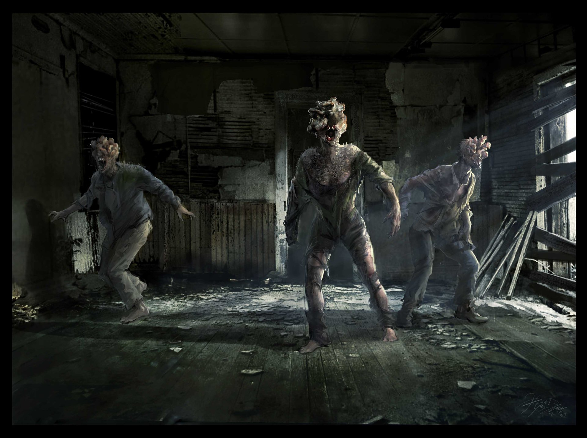
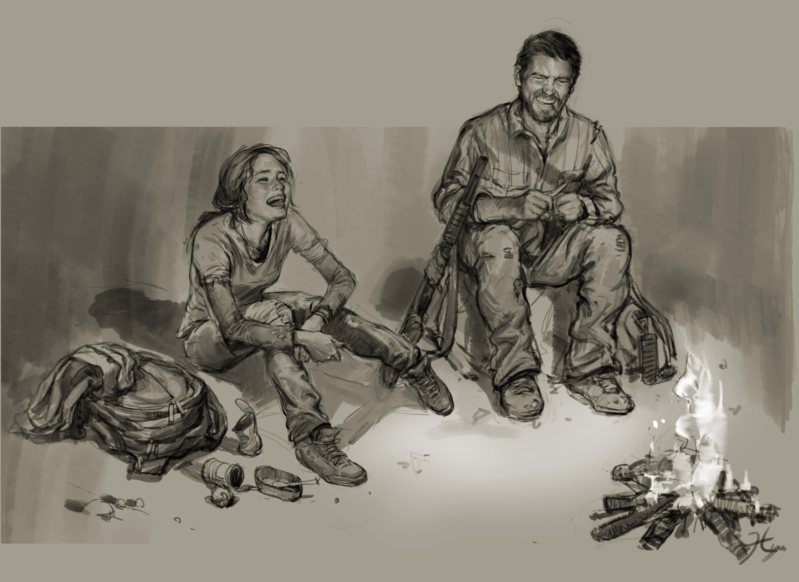
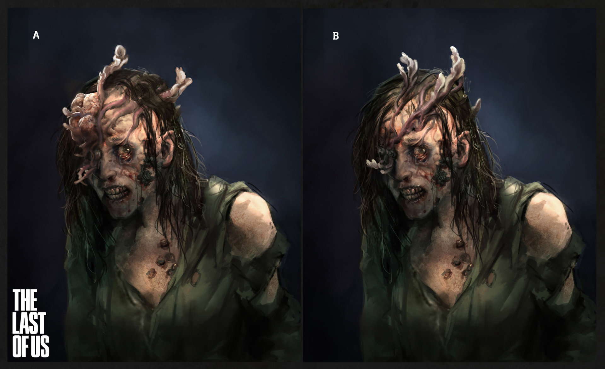
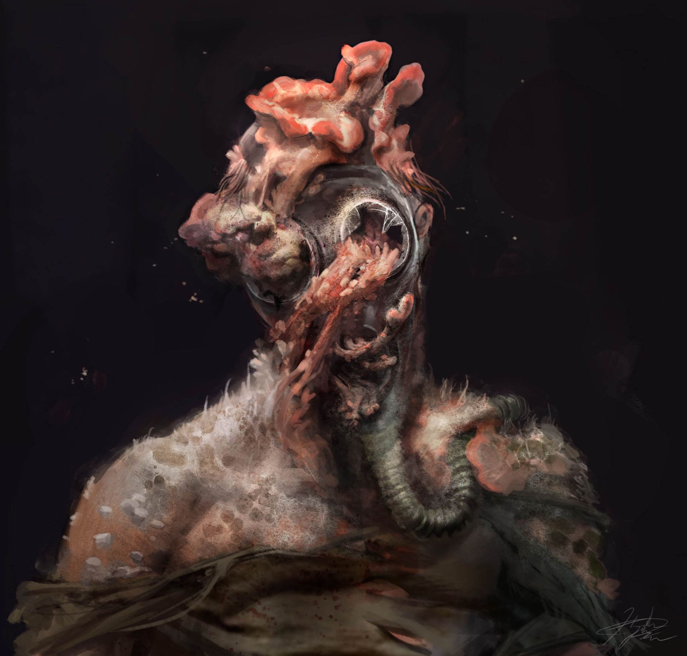
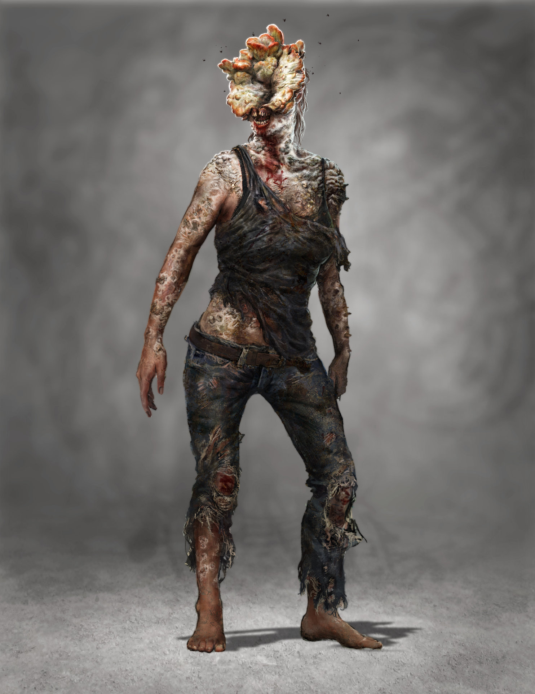

01. Gallery Overview
This virtual gallery presents the work of Hyoung Taek Nam, a concept artist known for his contributions to The Last of Us. The gallery explores how digital concept art can function as visual storytelling, using character design, infected creature design, and environmental atmosphere to communicate emotion, survival, and tension.
The goal of this gallery is to show how concept art is more than early planning for a game. It is a form of digital artwork that shapes the mood, world, and emotional experience of the final product.
02. About the Artist
Hyoung Taek Nam is a concept artist who worked with Naughty Dog and contributed to the visual development of The Last of Us. His work helped define the unsettling but realistic style of the game, especially through creature designs, character studies, and post-apocalyptic visual themes.
His artwork often combines realism with horror and atmosphere. In The Last of Us, this can be seen through the infected designs, worn survivor clothing, and environments where nature and decay exist together. These details help make the world feel believable and emotionally intense.
03. Gallery
This gallery presents selected concept art connected to Hyoung Taek Nam’s work on The Last of Us. The artwork focuses on infected creature design, character studies, and environmental storytelling. Each piece demonstrates how concept art contributes to atmosphere, realism, and emotional tone within the game.

Clicker Design
This piece focuses on one of the infected designs from The Last of Us. The fungal growth obscuring the face creates a disturbing and inhuman appearance, reinforcing themes of infection and transformation.
Source: Hyoung Taek Nam / ArtStation

Character Sketches
This concept sketch shows an early character moment between Joel and Ellie. Loose linework and lighting are used to communicate emotion, personality, and the relationship between the characters.
Source: Hyoung Taek Nam / ArtStation

Stalker Progression
This infected concept demonstrates the transition between human and fungal mutation. The design emphasizes realism and discomfort through texture, lighting, and distortion.
Source: Hyoung Taek Nam / ArtStation

Advanced Infection Design
This artwork explores more extreme stages of infection. Organic growth and exaggerated anatomy are used to create tension and visual horror while maintaining believable detail.
Source: Hyoung Taek Nam / ArtStation

Environmental Atmosphere
This scene combines infected designs with environmental storytelling. Lighting, shadows, and abandoned architecture create a tense and immersive atmosphere that reflects the emotional tone of the game.
Source: Hyoung Taek Nam / ArtStation
04. Multimedia Features
This gallery uses multiple media technologies to make the experience more immersive. The main form of media is high-resolution concept art, supported by video and audio. These elements work together to show how the artwork connects to the larger world and emotional tone of the game.
01. High Resolution Images
02. Embedded Video
03. Gallery Captions
04. Hover Effects
05. Ambient Audio
Video Example
This video adds extra context to the visual world of The Last of Us and supports the gallery’s focus on concept art, atmosphere, and design.
Ambient Audio
I decided to include ambient audio from The Last of Us because the music is such a big part of the atmosphere and emotional tone of the game itself. A lot of the concept art already feels quiet, tense, and isolated, and having the soundtrack available helps connect the visuals to the feeling of the world the artwork was created for.
05. How to Use the Gallery
The final gallery will be hosted through GitHub Pages and accessed through a direct web link. Visitors can open the link in any web browser and use the navigation bar at the top of the page to move between sections.
- Step 1 Open the gallery link in a web browser
- Step 2 Use the navigation bar to move through the gallery
- Step 3 View artwork, captions, and source information
- Step 4 Explore video and audio elements for additional context
06. References
- Concept Art Association. (2025, December 6). Hyoung Taek Nam. conceptartassociation.com
- Concept Art World. (2021, March 24). Game Studio Naughty Dog shares 'The Last of Us' concept art. conceptartworld.com
- Creative Uncut. (n.d.). The Last of Us Part II concept art & characters. creativeuncut.com
- Kunstmatrix. (n.d.). Virtual galleries for art. artspaces.kunstmatrix.com
- Nam, H. T. (2014, April 22). The beginning of infected: The Last of Us [ArtStation project]. artstation.com
- Nam, H. T. (n.d.). Resume. ArtStation. htnam.artstation.com
- Nam, H. T. [@hyoungtnam]. (n.d.). Instagram profile. instagram.com
- Naughty Dog. (2013). The art of The Last of Us. Dark Horse Books.
- Naughty Dog. (2020). The art of The Last of Us Part II. Dark Horse Books.